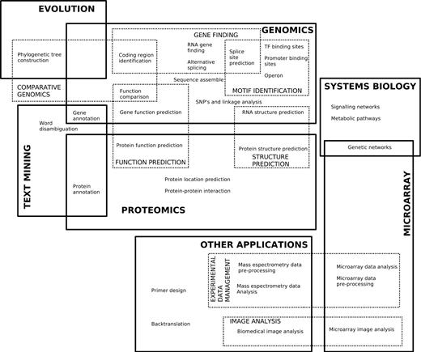
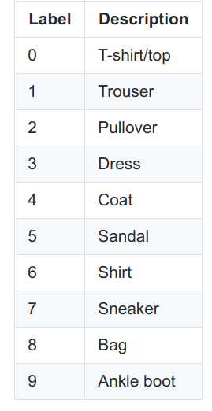
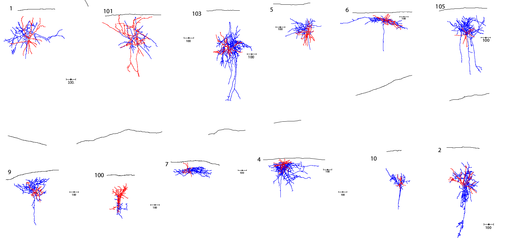
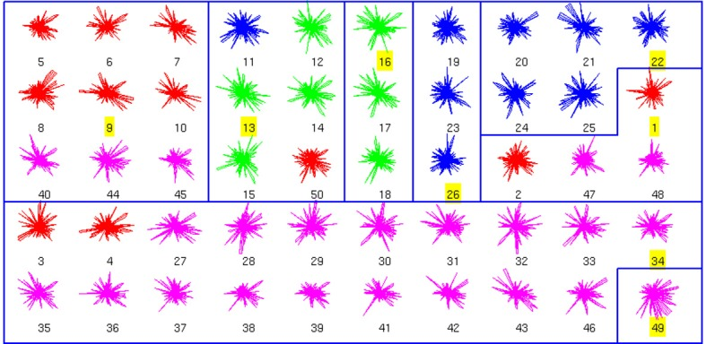
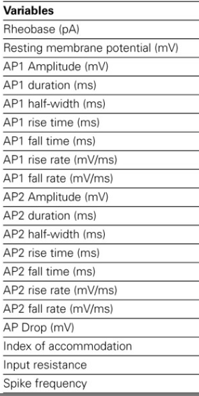
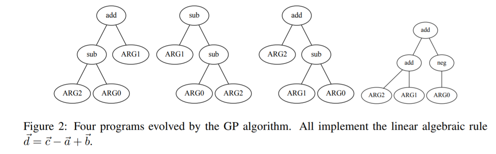

Machine Learning and Neural Networks
Roberto Santana and Unai Garciarena
Department of Computer Science and Artificial Intelligence
University of the Basque Country
Intelligent Systems Group.
PhD. Students ML
Ibai Roman • Gaussian Process • Bayesian Optimization
Unai Garciarena
• Deep Neural Networks
• Generative models (GANs and VAEs)
Maialen Murua (Tecnalia)
• Advanced regression methods
• Optimization
PhD. Students ML
Diana Carrera • Probabilistic Graphical Models • Copula Models and Vines
Ning Mei (BCBL) • Neuroscience • Deep Learning
Jon Vadillo
• Adversarial Examples
• Deep Learning
Introduction to the course: Table of Contents
Machine learning applications
Self-driving vehicles: Google self-driving car

Figure: Commons Wikipedia.
Machine learning applications
Self-driving vehicles: NASA Mars Exploration Rover
Figure: Commons Wikipedia.
{kind=link}
Machine learning applications
Bioinformatics
Larrañaga et al. Machine learning in Bioinformatics Briefings in Bioinformatics. DOI: doi.org/10.1093/bib/bbk007. 2006.
ML methods in PC Games
Black & White
Lionhead Studios and Electronic Arts. 2001.
Use of Machine Learning in local companies
Ubiquity of "learning algorithms"
ML Research
Automated programming and bug fixing.
Self-explaining learning methods.
Optimization techniques for hyperparameter search in high dimensions.
Emotion recognition.
Implementing faster, less data-hungry learning algorithms.
Ethical issues (algorithm bias, ML-enhanced weapons).
ML Applications
Finance (fraud detection, portfolio management, algorithmic trading) .
Autonomous vehicles (self-driving cars).
Social-media analysis and intervention (prioritize, censor posts in social networks).
Robotics.
Gaming (intelligent content generation, player experience modeling, artificial game players)
Medicine (brain-computer interfaces, personalised medicine).
And many more.
Artificial Intelligence
Other classification of AI
- Computer systems that act like humans.
- Programs that simulate the human mind.
- Knowledge representation and mechanistic reasoning.
- Intelligent or rational agent design.
What is AI?
- Devise algorithms to make computers behave intelligently.
- Development of machines that can perceive, reason, communicate, and act in complex environments much like humans can, or possibly even better than humans can.
- Turing test: The computer is considered intelligent if the observer cannot tell the difference between the computer responses and the human responses.
Impact of AI
Challenges and opportunities
- Usually called the next electricity.
- AI is changing all areas of the society: communications, economy, politics.
- Very strong impact in learning, teaching, and education.
- Profound impacts on future labour markets and competence requirements.
- In 2016, more than 1600 startups specialized in IA were registered in the word.
- Race for supremacy in the word. Among the advanced countries: EUA, Canada, China, UK, Israel.
I. Tuomi. The Impact of Artificial Intelligence on Learning, Teaching, and Education.JRC Science for Policy Report. 2018
Artificial Intelligence
Some AI disciplines
- Machine vision
- Natural language processing (NLP)
- Logical reasoning and representation
- Heuristic search
- Planning
- Expert systems
- Robotics
AI paradigms
- Symbol-Processing Approaches: all aspects of intelligent behavior can be exhibited by physical symbol systems.
- Biocomputational Approaches: react directly to input signals of some sort.
- Heterogeneous Approaches: having several symbolic processes working together.
- Integrative Approaches : borrow ideas from several previous approaches.
- Machine learning: computers are instructed to learn from experience or data.
N. Nilsson and D. Rumelhart. Approaches to Artificial Intelligence. 1993.
What is machine learning?
Definitions
- The capacity of a computer to learn from experience, i.e., to modify its processing on the basis of newly acquired information (Oxford dictionary).
- ML is the field of study that gives computers the ability to learn without being explicitly programmed (Samuel:1959).
- A computer program is said to learn from experience E with respect to some task T and some performance measure P, if its performance on T, as measured by P, improves with experience E (Mitchell:1997).
- Make the computer to adapt to new circumstances and to detect and extrapolate patterns.
A. Géron. Hands on Machine Learning with scikit-learn and Tensorflow. 2017.
Artificial Intelligence versus Machine learning
Criticism to Machine Learning
- The field's heavy use of statistical techniques to pick regularities in masses of data is unlikely to yield the explanatory insight that science ought to offer [Chomsky:2012].
- AI and robotics got to the point where you could actually do things that were useful, so it turned to the practical applications and somewhat, maybe not abandoned, but put to the side, the more fundamental scientific questions.
Criticism to Good Old Fashioned AI (GOFAI)
- In the logic-inspired paradigm, an instance of a symbol is something for which the only property is that it is either identical or non-identical to other symbol instances. It has no internal structure that is relevant to its use.
- Human knowledge is encoded in the algorithm and human intervention is needed to update it.
- Methods may require a lot of hand-tuning or long lists of rules.
Y. LeCun, Y. Bengio, and G. Hinton. Deep learning. Nature. 521.7553. 436-444. 2015.
Machine learning
Classification criteria for ML Methods
- Whether or not they are trained with human supervision (supervised, unsupervised, semi-supervised and reinforcement learning).
- Whether or not they can learn incrementally on the fly (online vs batch learning).
- Whether they work by simply comparing new data points to known data points, or instead they detect patterns in the training data and build a predictive model, much like scientists do (instance based vs model based learning).
A. Géron. Hands on Machine Learning with scikit-learn and Tensorflow. 2017.
Supervised learning
Renting a shared flat in Donosti
- After four years studying in San Sebastian a universitary student, not original from Donosti, perhaps from Ghana, has to find a flat again .
- He has lived in (8 flats already) so he knows about "good" and "bad" choices for a flat.
- Some memories are great (e.g., cool people he has lived with) and some are awful (the no-so-cool-flatmate's cat that used to eat his dinner).
- Therefore, he wants to use all his experience to predict, for three candidate flats, which ones could be a good choice.
- He can pose this flat selection question as a supervised classification problem.
Renting a shared flat in Donosti
| Criteria/Flat | F1 | F2 | F3 | F4 | F5 | F6 | F7 | F8 | C1 | C2 | C3 |
|---|---|---|---|---|---|---|---|---|---|---|---|
| Price | high | low | med. | high | low | med. | med. | high | med. | high | low |
| Distance | far | far | close | close | close | close | close | close | far | far | close |
| Parking | no | no | no | no | no | yes | no | no | no | no | yes |
| Roommates | cool | cool | cool | no | no | cool | cool | cool | cool | cool | no |
| Flat owner | nice | nice | terrible | nice | terrible | terrible | terrible | ? | nice | ? | ? |
| Heating | no | no | no | yes | yes | no | yes | yes | no | no | yes |
| Bus-stop | close | close | close | far | close | close | far | far | far | close | close |
| Room space | med. | large | small | small | small | med. | small | small | med. | small | small |
| Noisy area | no | yes | yes | no | no | yes | yes | no | no | no | no |
| Mother adv | yes | ? | no | ? | no | yes | yes | no | yes | no | no |
| Cat | no | yes | no | no | yes | yes | no | yes | yes | no | no |
| Kitchen | small | small | large | med. | med. | small | small | med. | large | small | small |
| Beach | far | far | close | close | far | far | far | far | far | far | far |
| Floor | 2 | 7 | 1 | 1 | 0 | 3 | 1 | 2 | 4 | 0 | 3 |
| Elevator | no | yes | no | no | no | no | no | no | no | yes | yes |
| Bars around | yes | yes | yes | yes | no | yes | no | no | no | yes | no |
| Enjoy | no | yes | no | no | no | yes | yes | no | ? | ? | ? |

fashion-mnist dataset. 2017.
Types of Machine Learning
Predicted or supervised learning
- The goal is to learn a mapping from imputs \(x\) to ouputs \(y\), given a labeled set of input-ouput pairs \(D = {(x^i,y^i)}_{i=1}^{N}\). \(D\) is called the training set \(N\) is the number of training examples.
- Usually, each \(x^i\) corresponds to a vector of numbers called features , attributes , or covariates.
- It is assumed that the response variable or target variable \(y^i\) is a categorical or nominal variable from some finite set \(y^i \in \{1,\dots,C \}\) or that \(y^i \in \mathcal{R}\) .
- When \(y^i\) is categorical the problem is known as classification. When, it is real-valued, the problem is known as regression.
K. P. Murphy. Machine learning. A probabilistic perspective. MIT Press. 2012.
Grouping similar unlabed observations
Clustering of neocortical interneurons
R. Santana, L. McGarry, C. Bielza, P. Larrañaga, and R. Yuste. Classification of neocortical interneurons using affinity propagation. Frontiers in Neural Circuits. 2013.
Clustering of Neurocortical cells
- parvalbumin-positive (PV+) basket cells (BC)
- PV+ chandelier cells (ChC)
- somatostatin-positive (SOM+) Martinotti cells (MC)
- SOM+ non-Martinotti cells (non-MC)
Types of cells
Clustering

Electrophysiological features

J. R. Koza. Genetic programming as a means for programming computers by natural selection.Statistics and computing. Pp. 87-112. 1994.
Types of Machine Learning
Descriptive or unsupervised learning
- We are given a set of inputs \(D = {(x^i)}_{i=1}^{N}\) and the goal is to find interesting or relevant patterns in the data.
- This is a less well-defined problem usually called knowledge discovery.
- Learning is done without any feedback or supervision from the user.
- The most common unsupervised learning task is clustering.
K. P. Murphy. Machine learning. A probabilistic perspective. MIT Press. 2012.
S. Russell and P. Norvig. Artificial Intelligence. A Modern Approach. Third Edition. Pearson Press. 2010.
Types of Machine Learning
Unsupervised learning problems
- Clustering: To group points in the dataset according some criterion or similarity measure.
- Biclustering: Do clustering taking into consideration two different criteria.
- Dimensionality reduction or latent-factor discovery: Find an alternative representation of the problem in lower-dimensional space keeping as much information as possible.
- Outlier detection: Detect observations that deviate markedly from other members of the sample in which it occurs.
- Event or change-point detection: For time series, the identification of time points at which a behavior change occurs.
- Discovering graph structure.
Dimensionality reduction

Common sense graphs in Natural Language Processing
Types of Machine Learning
Reinforcement learning
- An agent is situated in a given environment and has to make a sequence of decisions (or actions). For each action it receives an observation and a reward (or punishment) from the environment.
- The goal of RL techniques is to train the agent so to maximize the cumulative reward to receive from the environment.
- The environment is usually formalized as a partially observable Markov decision process (POMDP).
- RL is deeply rooted in psychological and neuroscientific perspectives on animal behaviour, of how agents may optimize their control of an environment .
Mnih et al. Human level control through deep reinforcement learning. Nature. 518.7540. Pp. 529-533. 2015.
Reinforcement learning to control the Atari game
RL for gaming
Types of Machine Learning
Other RL applications
- Robotics.
- Control (e.g., helicopter control).
- Vehicle routing.
- Human Computer Interaction (e.g., dialogue management).
- Economics (e.g., trading simulations).
- NN architecture search by network transformation.
- Targeted marketing.
Successes of Reinforcement Learning. Accessed August 2017.
TPOT: A tool for ML pipeline optimization
Types of Machine Learning
Genetic programming
- GP is a method to create programs that should fullfill a prespecified objective.
- A variety of program representations can be used, e.g., trees, program grammars, etc.
- It can be used for solving classification and regression problems.
- A measure of the program quality (fitness ) is defined and the search in the space of programs is posed as an optimization problem .
- Genetic operators (e.g., mutation, crossover, and mutation) are used to search for the optimal program.
- GP can be considered an evolutionary algorithm .
J. R. Koza. Genetic programming as a means for programming computers by natural selection.Statistics and computing. Pp. 87-112. 1994.
Machine learning applications
Genetic Programming
R. Santana. Reproducing and learning new algebraic operations on word embeddings using genetic programming. arXiv e-print (arXiv:1702.05624v1). 2017.
Supervised learning
Examples of GP algorithms
- Tree-based genetic programming
- Strongly typed genetic programming
- Grammatical evolution
- Probabilistic Incremental Program Evolution (PIPE)
- Stack-based genetic programming
- Cartesian genetic programming
Types of Machine Learning: Summary
Reinforcement learning
- Consists of learning the optimal policy for an agent in a simulated environment.
- The agent observes the environment, selects and performs actions, and gets rewards in return.
- The policy consists of the best strategy to perform actions in different states and maximize reward.
Supervised classification
- A number of observations (cases) are given.
- Each observation has an associated label.
- The task consists in predicting the label given the observation.
Other methods
- Genetic programming: Automatic evolution of programs . It can be used to solve supervised and unsupervised problems.
Unsupervised classification
- A number of unlabeled observations are given.
- Tasks can change, e.g., clustering , dimensionality reduction, etc.
Course objectives
Objectives
- Enable the student to understand, develop, and implement models and algorithms capable of autonomously learning.
- Present the main paradigms of machine learning approaches and the classes of problems where they can be applied.
- Teach machine learning methods based on neural networks.
- Introduce the most relevant types of neural networks, explaining the rationale behind their conception and scope of application.
- Introduce and show how to implement deep neural networks.
- Cover real-world applications of deep neural networks and hot topics in this area.
Course organization
Main modules
- Introduction to machine learning.
- Neural networks background (Biological and mathematical foundations).
- Introduction to Neural Networks.
- Neural networks paradigms.
- Deep learning with neural networks.
- Real-world application of deep neural networks.
- Invited lecture by an AI expert most likely from the field of Natural Language Processing (NLP)
- Advanced topics in neural networks studies.
- Consolidation (Oral presentations and discussion of projects).
Course organization
Resources
- The Machine learning and Neural Networks course has a virtual space in Egela, where links to useful software, bibliography, and problem repositories will be available.
- After each class the slides will be available from the virtual space of the course.
- Practical classes will be based on the Jupyter Notebooks framework with examples and exercises implemented in Python.
- Jupyter notebooks will also be available from the virtual class after each practical class.
- Students are encouraged to use the forum of the virtual class to exchange information, and ask and answer questions about the classes.
- Every exchange during the course (e.g., questions, emails, oral presentations, use of the forum, etc.) should be in English.
- Students are advised to create an account in github to develop, document, and keep up to date repositories containing the course projects that require an implementation.
Course evaluation
Final evaluation
Attending the classes.
Finishing the course project. It will be one individual project to be determined by the course instructor.
Oral examination of the course project.
Written examination covering all the content taught.
Continuous evaluation
Attending the classes.
Participation in the classes.
Completing the practical activities, i.e., the notebooks of the practical classes.
Presenting the course projects selected by the student (minimum, 3 team projects; maximum, 6 projects, 2 of each topic).
Two 1-hour long examination, each of which computes as one project to the evaluation.
Project characteristics
- Each of the three projects should correspond to a different topic . Topics are: 1) Machine learning. 2) Neural Networks. 3)Deep NNs.
- An ordinary project includes:
- A brief description of the project written in latex (between 4 and 12 pages) with latex style files available from Egela.
- The Python code (available from github or submitted to Egela in .zip format).
- A commented Jupyter notebook showing how the code solves the problem.
- Students can select a project of each topic from the available list.
- Each project will be available to a maximum of only two teams.
- An example of project submission (latex document, pdf, and commented notebook) will be available from Egela.
Project evaluation
Individual and team projects
- Projects can be individual or presented by a team of two students. In very exceptional cases (Ask me), 3 students.
- The same team can not present more than two projects.
Marks
- Minimum of 3 (correct) projects to pass the continuous evaluation course.
- Projects are assigned different difficulty levels: 1) Project of normal difficulty. 2) Medium degree of difficulty. 3) Very difficult project.
- The project difficulty will be taken into account for the final mark.
- For increasing the chance of a higher mark \( ( \geq 8)\), students are advised to include among the three selected projects, some of medium and high difficulty and/or to submit for evaluation 4 or 5 projects.